The Brood: from a painting to the world in a day
Until this evening nothing on the frontier fought back. You mined and built in peace. Then I asked the agents for something that would come for you.
These were my words to the agents:
"I need some enemies while I go around to mine ore and MH. Some alien bugs of some sort, they are always attracted to the POIs in the game. They come, linger around and live, if I am in their site they attack. It could be one, it could be more."
I added that they should attack buildings, eat the ore out of unguarded veins, and that a giant brood queen should live in one of the far regions with a horde around her.
Four kinds, painted first
An agent designed the family, named it the Brood, and painted three directions for each kind with Grok Imagine, a rest pose and an attack pose side by side. They belong to this world: dark chitin the colour of the ore rock, opal flecks crusted into the shell, and light coming from inside, so at night they are moving lights before they are shapes. Each kind glows in its own colour so you can tell them apart from the high camera. I picked one of the three for each.
The concepts I picked
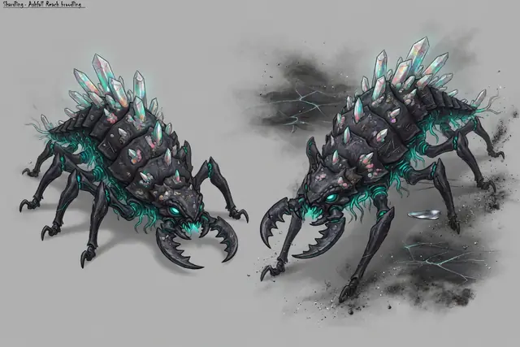
Shardling, "quill": the swarmer, opal quills glowing teal.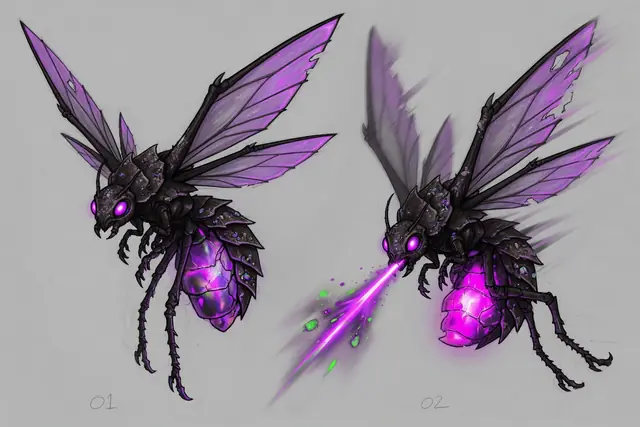
Gloamwing, "lantern": the flyer, a violet light from above.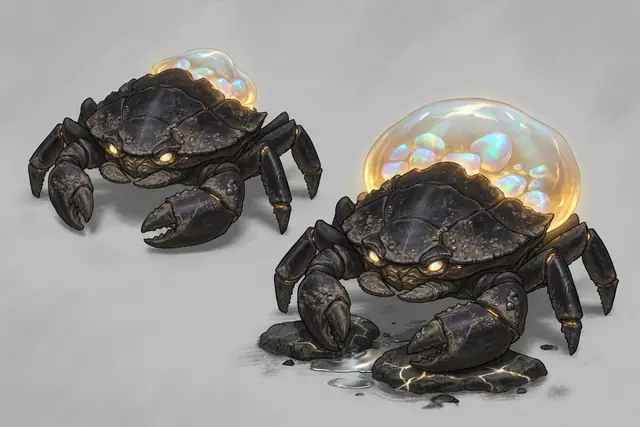
Lodeback, "hermit": the ore eater, its sac filling with opal.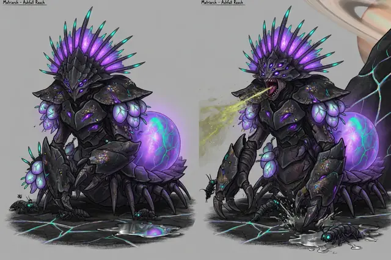
The Matriarch, "crowned": the queen, with her egg sac.


What each one does
The numbers are built against the Prospector, which has 45 hp, walks at 3.94 cells a second and fights with a cutting torch: about 4.7 damage a second, at the ground only. The Prospector builds; it fights badly, on purpose.
| Kind | hp | What it does |
|---|---|---|
| Shardling | 20 | Packs at deposits, wells, sites and pads. Chases at 4.4, faster than you walk, so you can leave its site but you can't outrun it in the open. Bites for 2 every 1.2 s. |
| Gloamwing | 30 | Flies at rooftop height and spits acid from 4 cells, out of the torch's reach. To spit at you it dives low, and for that moment the torch can hit it, if you time the swing. |
| Lodeback | 120 | Never hunts. It finds a vein with no building within 10 cells and no pilot within 8, eats 1.5 ore a second into its sac, up to 60, and walks off out of sight. Hit it and it flees. Kill it and the sac bursts: the ore goes back into the vein. |
| The Matriarch | 6,000 | 9.5 cells tall, she never leaves her nest in Slag Pockets, two regions from the start. She's in the world now. |
The numbers are tuned so you count the group before you walk in. One Shardling is no threat, two cost a fresh pilot about half its hp, and five kill it in about five seconds. A pack of six on a Hab Dome takes it down in about 40 seconds: a raid has to be answered, and there's time to get there.
The models
The agent built a blockout model of each from the paintings, sized against the Prospector, and 49 sounds for them: idle chitter, bites, wingbeats, the swarm coming. The models are rough on purpose for now. A pass that takes them closer to the paintings (the Matriarch's crown and sac, the opal quills, the Lodeback's glass sac) is queued. It has landed since.
The blockout models
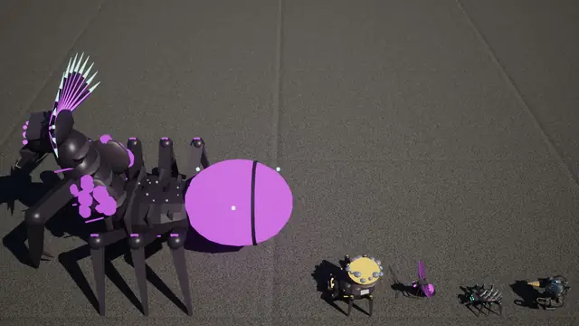
The family for scale: Matriarch, Lodeback, Gloamwing, Shardling, and the Prospector.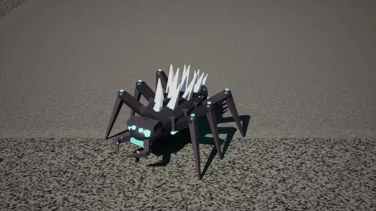
Shardling.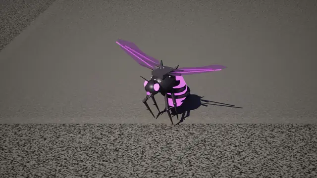
Gloamwing.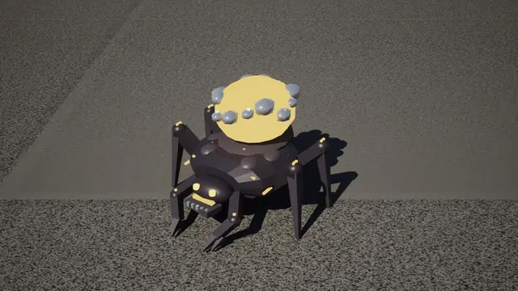
Lodeback, its sac full.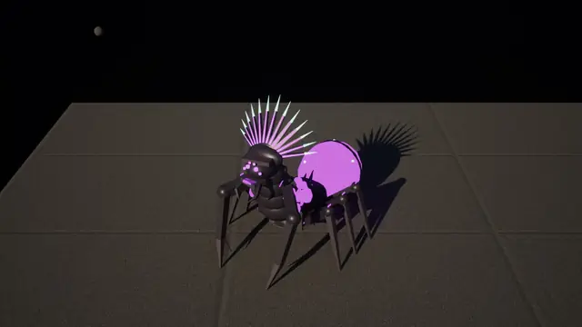
The Matriarch.


In the world
A few hours later the bugs were in the game. They are units of the simulation like any other, on a side of their own, the Brood. A brood director on the server spawns groups out of sight, at the edge of a region or the foot of a cliff, and sends them to a point of interest picked by weight: deposits, wells, unopened blueprint sites, pads, buildings and, most of all, fresh starfall craters. They linger there for a few minutes, longer at night, and then walk off and vanish.
Walk into their site and the whole group turns on you. A bug that's attacking you gets a red outline and a life bar. Raids come straight for a building, and KSTR warns every pilot nearby before they arrive: BROOD SWARM, heading for the Hab Dome.
The start stays quiet. Prospect Landing has the fewest bugs of any region, none linger within 15 cells of the Citadel, and while a new pilot works through the six-step opening the brood holds back. The far corners have more, bigger groups, more often.
After the merge the suites stood at 467 core tests, 191 server tests and 69 network tests, all passing.
The Brood arrives
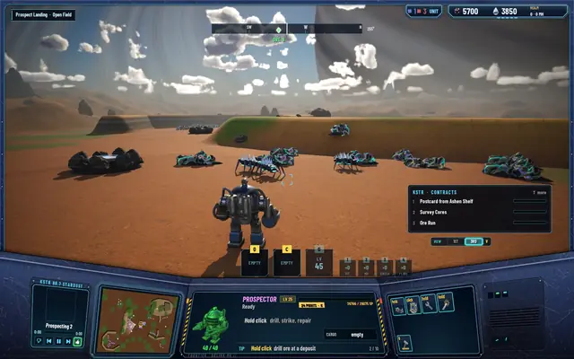
Shardlings lingering at a deposit. Count them before you walk in.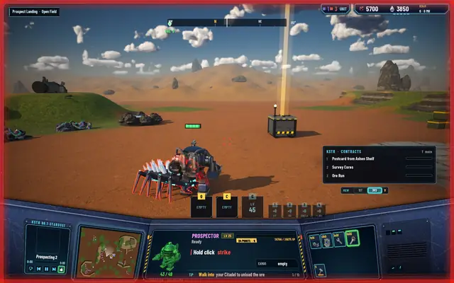
A Shardling on the Prospector: red outline, hp falling.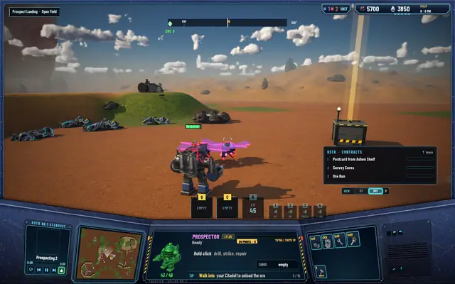
A Gloamwing diving to spit. This is the moment to swing.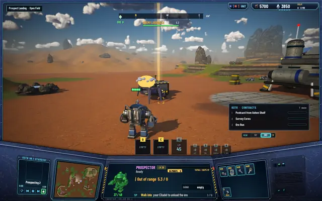
A Lodeback leaving with a full sac, out of the torch's reach.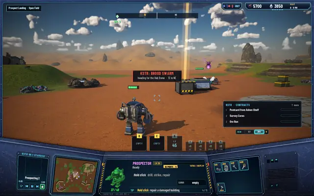
KSTR: BROOD SWARM, a raid on the Hab Dome.


The torch can't hold off a raid alone, and it can't reach a Gloamwing in the air. The next work answers that: guns for the realm.